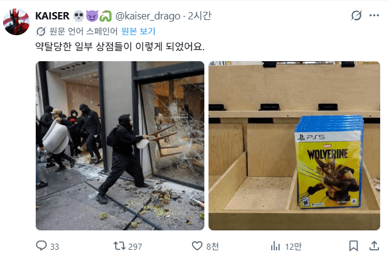

프랑스 게임샵 약탈 ㄷㄷㄷ
댓글
망해버린 ㅠㅠㅠ
ㅠㅠ버린
시간 안버린 ㅜㅜ
그냥 버려짐게임
오오 울버린을 문 앞에 걸어라
선택받지못해버린 ㅠㅠ
구라 아닌 것 같다 ㅜㅜ
ㅠㅠㅠㅠ
Ai 아니냐 아니면 개불쌍
남겨버린ㅜㅜ
(혼자 남겨져) 울어버린
제외린ㅜ
버려져버린ㅜㅜ
ㅋㅋㅋㅋㅋㅋ 이말년웹툰같네 ㅋㅋㅋ
울(버린)
나눔에도 가져가는 사람이없네
흑버린ㅠ
안버렸는데 남이 버린...
안가져가요
냄비받침으로 쓰면 딱인데 저걸 안가져가네
울버린도 찬찬히 살펴보면 그렇게 나쁘지 않은 게임인데 ㅜㅜ
울울버린 ㅠ

개쩌는 캐릭터가 나오는 게임이라고..ㅠㅠ
가져가봐야 쓰레기 버리는비용이 더드니
시디 넣고 다운로드 하고 플레이하는 시간과 용량이 손해
야 겜 재밋어보이드만 저정도냐 ㅋㅋㅋㅋ
울버린 을버린 ㅠㅠ
남아버린 ㅠㅠㅠ